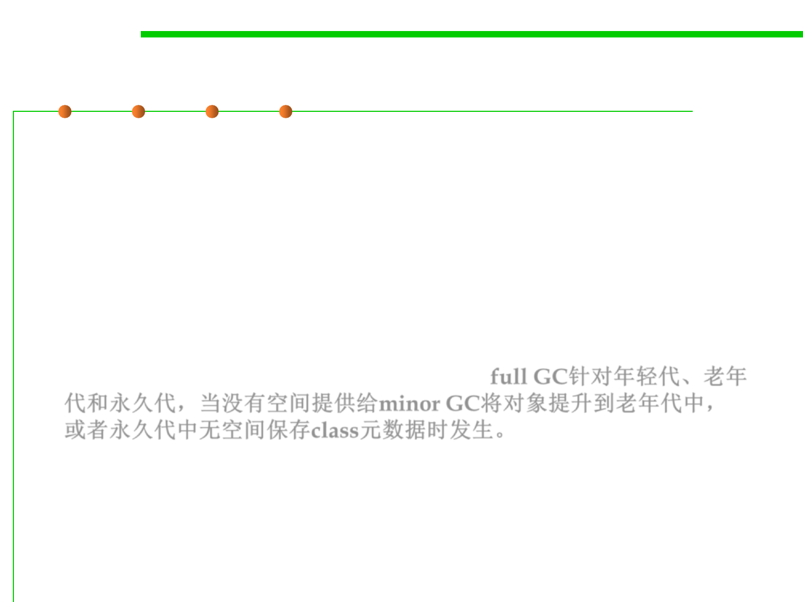

8.1 Metrics, Principles, and Methods of Construction for Performance
Minor, Major and Full Garbage Collection
▪ It actually performs a full garbage collection when it determines
there is not enough available space for object promotions from the
next minor garbage collection. This is a less costly approach rather
than being in the middle of a minor garbage collection and
discovering that the promotion of an object will fail.
▪ Recovering from an object promotion failure is an expensive
operation. A full garbage collection also occurs when the
permanent generation space does not have enough available space
to store additional VM or class metadata. full GC针对年轻代、老年
代和永久代，当没有空间提供给minor GC将对象提升到老年代中，
或者永久代中无空间保存class元数据时发生。